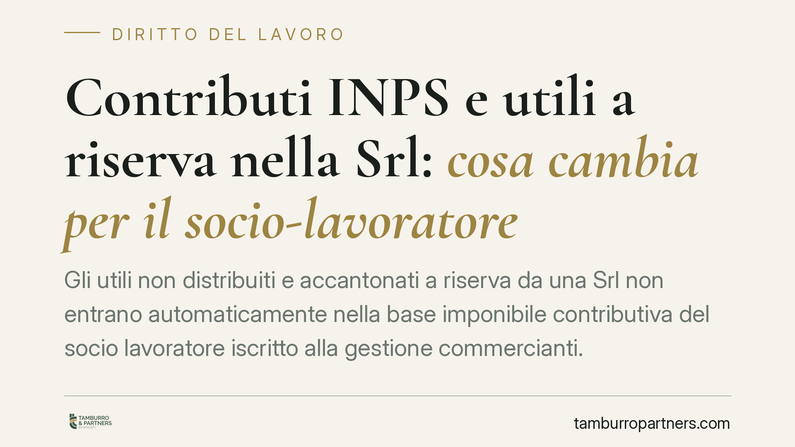

Contributi INPS e utili a riserva nella Srl: cosa cambia per il socio-lavoratore
Gli utili non distribuiti e accantonati a riserva da una Srl non entrano automaticamente nella base imponibile contributiva del socio lavoratore iscritto alla gestione commercianti. La contribuzione, in regime ordinario, segue la percezione effettiva. Diverso il caso della trasparenza fiscale, dove opera l'imputazione per competenza. Una distinzione che incide direttamente sulle richieste di pagamento e sui margini di difesa.

Il tema in sintesi
Quando un socio di Srl è anche lavoratore attivo nell'impresa e risulta iscritto alla gestione commercianti INPS, si pone una domanda ricorrente: gli utili che la società decide di trattenere e accantonare a riserva, senza distribuirli, devono essere assoggettati a contribuzione?
La questione non è teorica. L'INPS ha in più occasioni preteso contributi anche su utili mai percepiti dal socio, calcolando la base imponibile sui redditi prodotti dalla società. Il punto merita di essere chiarito distinguendo con precisione i due regimi fiscali applicabili alla Srl.
Inquadramento normativo
La base imponibile contributiva per artigiani e commercianti è ancorata, in via generale, ai redditi d'impresa denunciati ai fini IRPEF (art. 3-bis della L. 438/1992, di conversione del D.L. 384/1992). Il riferimento è dunque al reddito effettivamente imputato al soggetto ai fini fiscali.
Da qui la distinzione decisiva tra i due regimi della Srl:
- Regime ordinario (tassazione IRES in capo alla società): l'utile è tassato in capo alla Srl. In capo al socio persona fisica il reddito rileva solo al momento della distribuzione, cioè con l'effettiva percezione del dividendo. Fino a quel momento gli utili accantonati a riserva restano nel patrimonio societario e non costituiscono reddito imputato al socio.
- Regime di trasparenza fiscale (artt. 115 e 116 TUIR): qui il reddito della società è imputato direttamente ai soci per competenza, in proporzione alle quote, a prescindere dall'effettiva distribuzione. In questo caso l'utile rileva fiscalmente in capo al socio nell'esercizio di maturazione, e su tale reddito d'impresa si innesta la contribuzione.
La differenza è netta: nel regime ordinario conta il momento della percezione; nel regime di trasparenza conta il momento della maturazione.
Le implicazioni pratiche
Per il socio-lavoratore di una Srl in regime ordinario, la conseguenza è che gli utili lasciati a riserva non generano, di per sé, obbligo contributivo. L'obbligo sorge quando gli utili vengono effettivamente distribuiti e percepiti.
Ciò significa che una richiesta INPS fondata sul solo dato dell'utile societario accantonato — senza verificare quale regime fiscale la società abbia adottato e se vi sia stata effettiva distribuzione — può risultare priva di adeguato fondamento. Sul piano probatorio, secondo l'orientamento che valorizza l'ancoraggio della contribuzione al reddito imputato, spetta all'ente dimostrare i presupposti della pretesa, ossia la ricorrenza dei requisiti che rendono l'utile imponibile in capo al socio.
Attenzione, però: nel regime di trasparenza il ragionamento si ribalta. Chi ha optato per gli artt. 115-116 TUIR si è esposto all'imputazione per competenza, con conseguente rilevanza contributiva dell'utile anche se non distribuito. La scelta del regime fiscale, quindi, produce effetti diretti anche sul fronte previdenziale.
Cosa fare in concreto
- Verificare il regime fiscale della Srl. Accertare se la società è in tassazione ordinaria IRES o ha optato per la trasparenza (artt. 115-116 TUIR): è il primo elemento che determina la disciplina contributiva applicabile.
- Ricostruire la documentazione societaria. Recuperare i verbali di approvazione del bilancio e le delibere di destinazione dell'utile, per dimostrare l'accantonamento a riserva e l'assenza di distribuzione.
- Tenere traccia delle effettive distribuzioni. Documentare data e importo di ogni dividendo percepito, poiché nel regime ordinario è la percezione a segnare il momento rilevante ai fini contributivi.
- Esaminare con attenzione gli avvisi di addebito. Controllare su quali importi e su quale presupposto l'INPS calcola i contributi, distinguendo tra utile societario accantonato e reddito effettivamente imputato al socio.
- Verificare i termini di impugnazione caso per caso. I termini per contestare avvisi di addebito e cartelle sono brevi e variano a seconda dell'atto: vanno controllati puntualmente per non compromettere le possibilità di difesa.
Una nota metodologica
La materia è in evoluzione e le pronunce di legittimità intervengono su fattispecie non sempre sovrapponibili. Ogni valutazione va condotta sul singolo caso, tenendo conto del regime fiscale adottato, della concreta destinazione degli utili e del contenuto specifico dell'atto ricevuto.
Contributo informativo a cura di Tamburro & Partners Avvocati. Non costituisce parere legale.
Ogni storia di lavoro ha i suoi tempi.
Se gestisci HR e vuoi un confronto su contenzioso, ispezioni o licenziamenti, scrivi allo studio. Ti rispondiamo entro un giorno lavorativo.